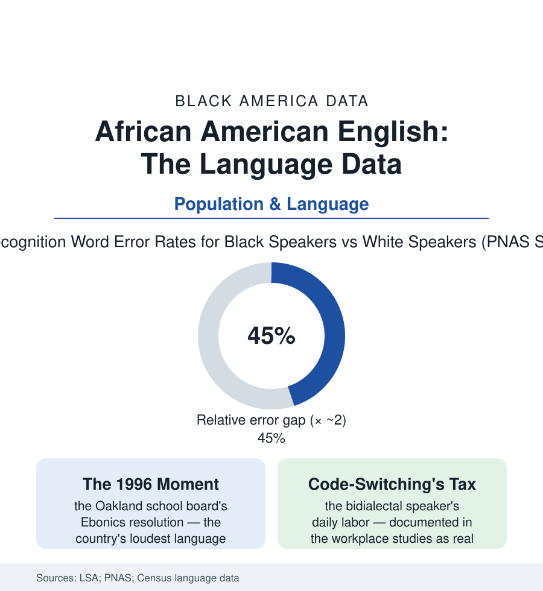

Black Census
The Language File: African American English in the Data
The most studied dialect in American linguistics is also a variable in the education, housing, and employment data — measured in test scores, callbacks, and voice recognition error rates.

The languages article in this section counted the tongues Black America speaks; this one examines the variety it invented: African American English — a rule-governed dialect system that linguists rank among the most thoroughly documented in the world, and that appears in the data of nearly every other section of this atlas as a variable with consequences. This article reads the language file: what the dialect is in the scholarship, and what it costs in the measurements.
A System, Studied as a System
The linguistic consensus is a half-century old and unusually complete: African American English is not slang, not broken English, and not a collection of errors, but a dialect with its own phonology, tense-aspect system (the habitual 'be,' the stressed remote-past markers that standard English cannot say in one word), and regional grammars — documented from the Gullah-Geechee creole of the Sea Islands (the language file's closest American relative to a distinct tongue, its speakers' data appearing in the census under English for want of a category) through the urban vernaculars the dialect-density measures quantify. Its origins remain the field's one open scholarly argument — the creole hypothesis (forged in slavery's language contact, its grammar carrying West African and Caribbean creole structure) against the dialect hypothesis (built from the British and Irish Englishes of the colonial South, diverged by segregation) — the current scholarship's synthesis (a creole-influenced base restructured across the plantation generations, then diverged sharply in the Great Migration's cities, so that the modern urban vernacular is in measurable ways farther from white Southern speech than its ancestor was) being itself a demographic finding: the dialect's modern intensity is segregation's linguistic fossil record, the divergence curves tracking the housing maps of this atlas with embarrassing fidelity. The census counts none of this — the language question offers no box for the nation's most studied dialect — so its population is estimated from the survey and ethnographic data: the dialect spoken, to some degree, by the large majority of Black Americans, and deployed across the continuum every speaker commands, the bidialectal range itself the population's signature skill.
Where the Dialect Meets the Ledger
The dialect becomes data where institutions listen: in the reading file (the dialect-density studies finding the child's distance from school English predicting early reading friction — and the pedagogy that teaches contrastively, naming both systems and translating between them, posting the better results in the intervention literature against the correction regime the science rejects), in the housing and employment audit studies (the linguistic-profiling experiments — the caller whose voice reads as Black quoted different rents, offered different apartments, and invited to fewer interviews in the paired phone studies, the voice on the phone doing what the photograph once did in the application's file), in the courtroom research (the transcription studies finding court reporters misrecording dialect testimony at rates that would void a breathalyzer — the 2019 Philadelphia study's 40 percent sentence-error figure entering the legal record), and in the newest file of all, the machines': the Stanford-led PNAS audit of the major speech-recognition systems finding word-error rates for Black speakers running roughly double those for white speakers on identical content — the voice assistant, the captioning, the automated interview screen trained on the standard and billing the dialect speaker for the difference. The through-line is the linguists' fifty-year refrain, now measurable in five industries' data: the penalty attaches not to any failure of communication — the dialect communicates with a precision its grammarians celebrate — but to the listener's and the system's decision about the speaker, automated at scale in the newest instance. The code-switch that the workplace studies document (the bidialectal speaker performing the standard at work and the vernacular at home, the switching itself a skill the labor market demands without ever listing) is the population's own answer, paid daily, in the currency of attention.
Reading the Language Data
A dialect is a people's archive — of Africa, of slavery's forge, of the segregated city — carried in the mouth and audited, every day, by institutions that mistake it for a deficit. The linguists settled the science two generations ago; the measurements in this file are of the listeners. The speech-recognition study will be re-run on better-trained machines. The standard the machines are trained to is the last data point, and it is a choice.
More in Black Census
The Black Population of the United States: Size, Definitions, and Distribution
The Black population of the United States totals 52.8 million — 15.4 percent of the nation. How the Census Bureau defines and counts the population, and where it lives.
Black Median Household Income in the United States
Black median household income stands at $56,490 in the Census Bureau's annual income report — how the figure is measured, how it compares, and what drives it.
The Black Poverty Rate: Levels, Children, and the Long Trend
The official Black poverty rate is 17.1 percent — against 11.1 percent nationally and 7.7 percent for non-Hispanic White Americans. How poverty is measured and what the data show.
Source: Linguistic Society of America; U.S. Census Bureau language data; Proceedings of the National Academy of Sciences speech-technology studies; Journal of Sociolinguistics research.